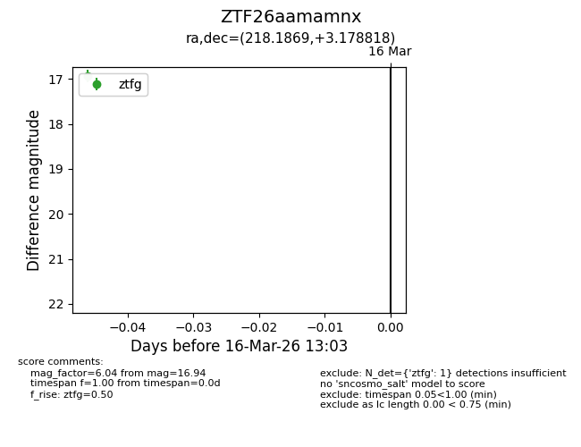
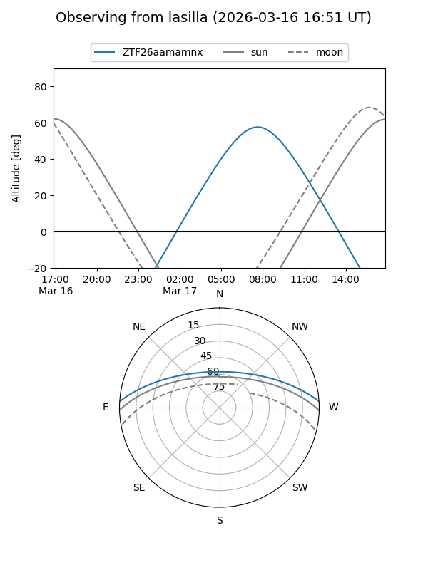
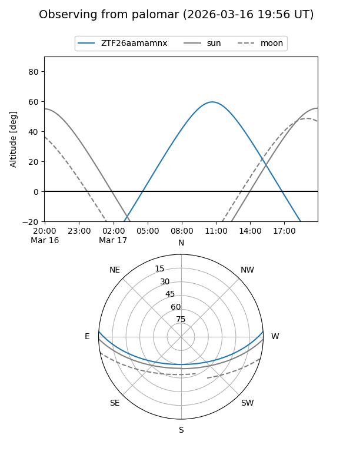

ZTF26aamamnx
Target ZTF26aamamnx at 2026-03-16 13:05
Aliases and brokers:
FINK: link
Lasair: link
ALeRCE: link
alt names
ZTF26aamamnx (ztf,fink_ztf)
Coordinates:
equatorial (ra, dec) = 218.1869,+3.17882
equatorial (HMS+DMS) = 14:32:44.85,+03:10:43.74
galactic (l, b) = (352.6371,+55.94378)
Flags:
Photometry:
last ztfg=16.94
1 ztfg detections
Lightcurve

Visibility


Additional plots